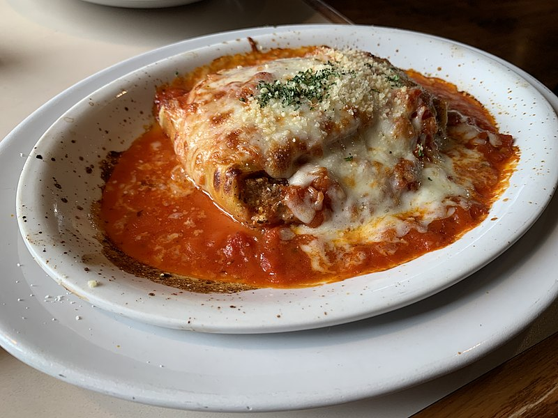

Venezuelan Pasticho

Venezuelan version of lasagna
Pasticho is the Venezuelan version of lasagna. It is very rich and creamy since unlike lasagna, a bechamel sauce is used. One word to describe it is yum! This is a very popular dish in Venezuela and each family has there own way of making it there own. Some people will add a layer of ham to the bake, others will omit it. To me and my family, the key is in the meat sauce.
Pasticho was a lot of work almost like a marathon. So it was a special occasion kind of dish. No more I say! Now, I always have frozen meat sauce in the freezer and the lasagna noodles that require no previous boiling. The bechamel sauce is made in about 10 minutes, if you plan in advance you can have a delicious pasticho on hand at a moments notice.
ingredients for bechamel sauce
- 1/2 Cup unsalted butter
- 1/2 Cup flour
- 8 Cups (2L) milk (warm), reccomend whole milk
- 1 Teaspoon salt
- 1/4 Teaspoon nutmeg
- 1/4 Teaspoon black pepper
ingredients for pasticho
- 12 sheets of rolled flat lasagna noodles (I use Barilla Oven-Ready-Lasagne-no boiling required)
- 6-8 Cups of Bolognese Sauce
- 2 Cups parmesan cheese (grated)
- 1 cup mozzarella cheese (shredded)
Instructions
- Step One: Make the Bolognese sauce To make the bolognese sauce follow this other recipe on my page. I usually will plan accordingly and make the bolognese the day before.
- Step Two: Prepare Bechamel sauce In a medium pot, melt butter over medium heat. Once butter is melted completely, add the flour and whisk until smooth, about 2 minutes. Gradually add the warm milk, whisking constantly to prevent any lumps from forming. Add black pepper, salt, nutmeg and continue to simmer and whisk over medium heat until the sauce is smooth, creamy, and thick. About 5-8 minutes. The sauce should be thick enough to coar the back of a spoon. Remove fro mthe heat and check the seasoning. Set aside. Preheat oven to 375°F. Line a large backing dish 9x13. Spread 1/2 cup of the bechamel sauce into the bottom.
- Step Three: Assemble pasticho Arrange 3 pasta sheets side by side, covering the bottom of the backing dish. Evenly spread a layer of bolognese sauce, about 2 cups worth. Spread 1 1/2 cups of the bechamel sauce. Sprinkle 1/2 cup of parmesan cheese on top. Arrange another 3 layers of the pasta sheets, followed by bolognese, bechamel, parmesan then repeat. Arrange the final layer of pasta sheets on top with any remaining bechamel sauce, parmesan, and mozzarella cheese. Cover the pasticho dish with aluminium foil and place the dish on a baking sheet. Bake on the middle rack of the oven for 45-50 minutes, or until top is bubbling and the pasta is tender. Remove foil and bake uncovered for about 15 minutes or until cheese becomes golden. Then let rest for 8-10 minutes before serving. Buen Provecho!